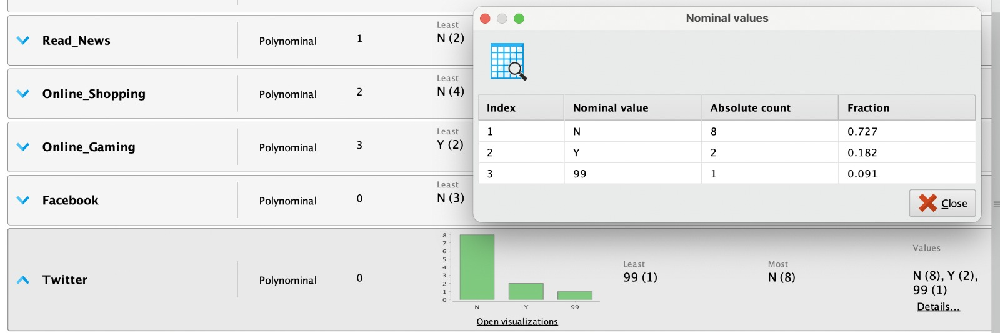

Preparacion de datos
Los datos no son perfectos. Como todo lo demás en la vida, están sujetos a errores humanos, inconsistencias, errores ortográficos e información incompleta, repetida o redundante. La idea de la preparacion de datos (data scrubbing) es mejorar estos aspectos del detaset para poder entrenar modelos que arrojen predicciones mas certeras.
Manejo de datos faltantes
Son datos que no existen en el dataset. Dependiendo del contexto es posible que sea valido dejarlo como está o reemplazarlo con algún valor. No siempre es un problema.
En RapidMiner, podemos ver informacion de cada atributo, en este caso lo que nos interesa son los valores faltantes. Podemos ver en este caso que Read_News, Online_Shopping, Online_Gaming y Other_Social_Network cuentan con valores faltantes

Existe el operador Replace Missing Values que nos permite manejar esta situacion. Podemos elegir uno o varios atributos y reemplazar los valores faltantes por: - El maximo valor para ese att - El minimo valor para ese att - El promedio - 0 - Un valor especifico
Reducción de datos
La idea es filtrar los datos (registros) que no vayan a ser de utilidad.
Se utiliza el operador Filter Examples con las condiciones que el dataset resultado esperamos que cumpla. Puede utilizarse para eliminar outliers, valores que no pertenezcan a un rango preestablecido u como otra forma de manejar los valores faltantes (si no cuenta con un valor para el atributo X, elimino el registro completo).
Manejo de datos inconsistentes
Ocurre cuando el valor existe pero no es válido o significativo.
En el ejemplo, se puede observar que el atributo Twitter cuenta con 3 valores posibles: Y, N y 99 ... 99? No parece ser un valor esperado para este tipo de atributo, es inconsistente.

El operador Replace puede ser de utilidad, ya que nos permite seleccionar el atributo y reemplazar el valor atípico 99 por uno mas razonable, N. No siempre es tan sencillo solucionar las inconsistencias dentro de un dataset, podría tomar varios reemplazos y/o operadores de datos faltantes para preparar el conjunto de datos.
Outliers
Un outlier es un dato que a simple vista es imposible que sea valido en el contexto estudiado.
El enfoque para resolverlo es practicamente el mismo que para los datos faltantes, aunque en este caso suele ser mejor su eliminación.
Reducción de atributos
En todo dataset pueden haber atributos irrelevantes, que no aporten al proposito de predecir la variable objetivo. Si reducimos la cantidad de funciones, los modelos generalmente se entrenan mucho más rápido. Y, a menudo, el modelo resultante es más simple y fácil de entender.
RapidMiner puede eliminar esos atributos en la vista sin eliminarlos del dataset, porque el hecho de que no sean de utilidad para este caso no significa que nunca vayan a ser relevantes.
Hay diversas formas de reducir atributos. Puede ser realizado manualmente, con el operador Select Attributes.
Tambien se cuenta con algoritmos para cumplir con este objetivo, dependiendo de la necesudad y tipos de datos presentes en el dataset
Algoritmos supervisados
Regresión Lineal
La regresión lineal es un método estadístico utilizado para modelar la relación lineal entre dos o más variables. En particular, busca establecer la relación entre una variable dependiente (o respuesta) y una o más variables independientes (o predictores) a través de una ecuación lineal.
Es utilizado para problemas de regresión y esta limitado a datos numéricos con salida numérica
Regresión Logística
La regresión logística es un modelo estadístico utilizado para analizar la relación entre una o más variables independientes (predictoras) y una variable dependiente binaria categórica. La variable dependiente se representa como la probabilidad de que ocurra un evento particular.
Es utilizado para problemas de clasificación y esta limitado a datos numéricos con salida binaria categórica.
Análisis Discriminante Lineal
El análisis del discriminante lineal (LDA) es una técnica de clasificación que busca separar de manera óptima distintas clases de datos en un espacio de características. El objetivo es encontrar un hiperplano que maximice la separación entre las clases y minimice la variabilidad intraclase.
El LDA asume que las clases se distribuyen según una distribución normal y que tienen covarianzas iguales o proporcionales.
k-NN
K-NN (k-nearest neighbors), es un algoritmo de clasificación y regresión en aprendizaje automático. En este enfoque, para clasificar un nuevo punto de datos, se identifican los "k" puntos de datos más cercanos del conjunto de entrenamiento en función de alguna métrica de distancia, comúnmente la distancia euclidiana en un espacio multidimensional. Luego, se asigna al nue vo punto la clase más común entre esos "k" vecinos. La elección de "k" afecta la sensibilidad del modelo a la variabilidad en los datos y puede impactar en la precisión de las predicciones.
Naive Bayes
Naive Bayes es un algoritmo de clasificación. Se basa en el teorema de Bayes, que describe la probabilidad condicional de un evento basándose en información previa sobre eventos relacionados. A pesar de su simplicidad y asunciones simplificadas, Naive Bayes es un algoritmo efectivo para clasificar datos en diferentes categorías.
La suposicion "naive" es la independencia condicional de las variables predictioras con respecto a la hipótesis
Bibliografia
- North, M. (2012). Data Mining for the Masses.
- Brownlee, J. (2016). Master Machine Learning Algorithms.